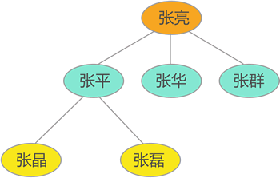
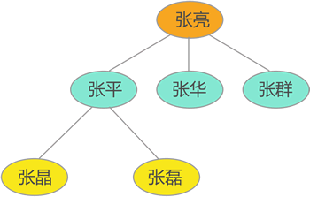

什么是数据结构
当你决定看这篇文章，就意味着系统学习数据结构的开始。本节，我们先来讲什么是数据结构。
数据结构，直白地理解，就是研究数据的存储方式。
我们知道，数据存储只有一个目的，即为了方便后期对数据的再利用，就如同我们使用数组存储
因此，数据在计算机存储空间的存放，决不是胡乱的，这就要求我们选择一种好的方式来存储数据，而这也是数据结构的核心内容。
例如，一直以来大家面对的数据存储，都是类似存储 1、2、{a,b,c}、"http://data.biancheng.net" 这样的问题，解决方式无疑是用变量或者数组对数据进行存储，即：

图 1 数据及数据之间的关系
对于存储之间具有复杂关系的数据，如果还是用变量或数组来存储（比如用数组存储 {“张亮”,"张平",“张华”,"张群","张晶","张磊"} ），数据存储是没有问题，但是无法体现数据之间的逻辑关系，后期根本无法使用，显然不明智。
因此，数据结构是什么? 我认为，数据结构是一门学科，它教会我们“如何存储具有复杂关系的数据更有助于后期对数据的再利用”。
我们知道，数据存储只有一个目的，即为了方便后期对数据的再利用，就如同我们使用数组存储
{1,2,3,4,5} 是为了后期取得它们的加和值，无缘由的数据存储行为是对存储空间的不负责任。因此，数据在计算机存储空间的存放，决不是胡乱的，这就要求我们选择一种好的方式来存储数据，而这也是数据结构的核心内容。
例如，一直以来大家面对的数据存储，都是类似存储 1、2、{a,b,c}、"http://data.biancheng.net" 这样的问题，解决方式无疑是用变量或者数组对数据进行存储，即：
int a=1;
int b=2;
char str[3]={'a','b','c'};
char *data="http://data.biancheng.net";

图 1 数据及数据之间的关系
对于存储之间具有复杂关系的数据，如果还是用变量或数组来存储（比如用数组存储 {“张亮”,"张平",“张华”,"张群","张晶","张磊"} ），数据存储是没有问题，但是无法体现数据之间的逻辑关系，后期根本无法使用，显然不明智。
针对此类数据，数据结构中提供有专门的树结构来存储这类数据。
再比如，导航无疑是出游旅行的必备神器，在我们程序员眼中，无论是哪款导航软件，其导航功能的实现都需要大量地图数据的支持。很明显，这些数据绝不是使用变量或数组进行存储的，那样对于数据的使用简直是个悲剧。针对此类数据，数据结构提供了图存储结构，专门用于存储这类数据。
通过以上两个示例可以体会出，数据结构教会我们的绝不仅仅是如何存储 1、2、{a,b,c} 这样简单的数据，而是解决具有复杂关系的大量数据的存储问题。因此，数据结构是什么? 我认为，数据结构是一门学科，它教会我们“如何存储具有复杂关系的数据更有助于后期对数据的再利用”。
关注公众号「站长严长生」，在手机上阅读所有教程，随时随地都能学习。内含一款搜索神器，免费下载全网书籍和视频。

微信扫码关注公众号